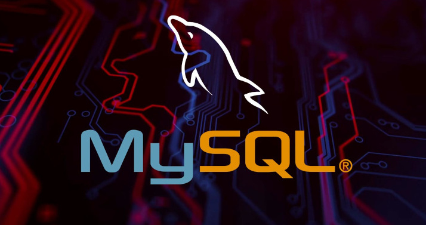
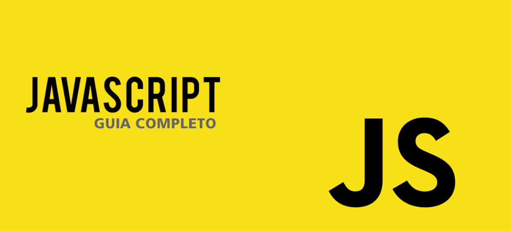

A importância da programação.
A programação é fundamental no mundo moderno porque está presente em quase tudo que usamos: aplicativos, sites, sistemas de empresas e até equipamentos do dia a dia. Ela permite criar soluções, automatizar tarefas e transformar ideias em realidade. Além disso, aprender a programar desenvolve o raciocínio lógico e a capacidade de resolver problemas, habilidades essenciais em qualquer área.

O que é programação ?
A programação é a forma de “conversar” com o computador, dando instruções para que ele execute determinadas tarefas. Essas instruções são escritas em linguagens de programação, como Python, JavaScript ou C++, que transformam as ideias do programador em comandos que a máquina entende. Funciona basicamente assim: o programador escreve um código, que é uma sequência lógica de passos. Esse código é então interpretado ou compilado pelo computador, que o traduz em linguagem de máquina (formada por 0 e 1). A partir daí, o computador executa exatamente o que foi pedido — seja calcular um número, exibir uma imagem na tela ou rodar um jogo complexo. Em resumo, a programação é o que torna possível tudo que usamos no mundo digital: sites, aplicativos, redes sociais, sistemas de bancos e até mesmo jogos. Ela combina lógica, criatividade e resolução de problemas para transformar ideias em realidade.
Cada linguagem de programação tem um propósito diferente. Python é muito usado para automação, ciência de dados e inteligência artificial. JavaScript dá vida às páginas da web, tornando-as interativas. Java e C# são comuns no desenvolvimento de aplicativos e sistemas grandes. C e C++ são usados em softwares de alto desempenho, como jogos e sistemas operacionais. Já SQL serve para trabalhar com bancos de dados. Em resumo, cada linguagem tem sua especialidade, e juntas tornam possível criar praticamente qualquer tipo de tecnologia.
Linguagens mais famosas:

Python é uma das linguagens de programação mais populares do mundo, conhecida por sua simplicidade e facilidade de aprendizado. Seu código é escrito de forma clara e direta, o que a torna ideal tanto para iniciantes quanto para profissionais experientes. Ela é muito versátil e pode ser usada em várias áreas: desenvolvimento de sites e aplicativos, automação de tarefas, análise de dados, inteligência artificial, aprendizado de máquina e até em jogos. Além disso, Python possui uma enorme comunidade de usuários, o que garante muitos recursos, bibliotecas e suporte para quem está aprendendo. Por ser prática e poderosa, Python se tornou uma linguagem essencial no mercado de tecnologia, abrindo portas para quem deseja começar na programação ou se especializar em novas áreas.
MySQL é um dos sistemas de gerenciamento de banco de dados mais utilizados no mundo. Ele funciona armazenando, organizando e permitindo o acesso rápido às informações de forma estruturada. Por ser baseado em SQL (Structured Query Language), ele possibilita que os desenvolvedores criem, consultem e manipulem dados de maneira prática e eficiente. É amplamente usado em sites, aplicativos e sistemas que precisam lidar com grandes volumes de dados, como redes sociais, lojas virtuais e serviços online. Além disso, o MySQL é gratuito, de código aberto e possui ótima performance, o que faz dele uma escolha popular tanto para projetos pequenos quanto para grandes empresas.
JavaScript é uma das linguagens de programação mais importantes da web. Ele é responsável por trazer interatividade e dinamismo para sites, permitindo criar desde animações simples até aplicações complexas que rodam diretamente no navegador. Com o JavaScript, é possível manipular elementos de uma página em tempo real, validar formulários, criar menus interativos e até desenvolver jogos. Além disso, com o uso de tecnologias como Node.js, ele também pode ser usado no back-end, ampliando suas possibilidades. Por ser versátil e estar presente em praticamente todos os navegadores, o JavaScript se tornou essencial para o desenvolvimento moderno, sendo uma das linguagens mais usadas no mundo.